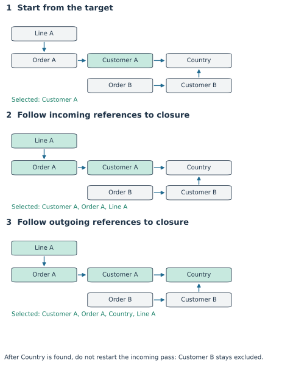
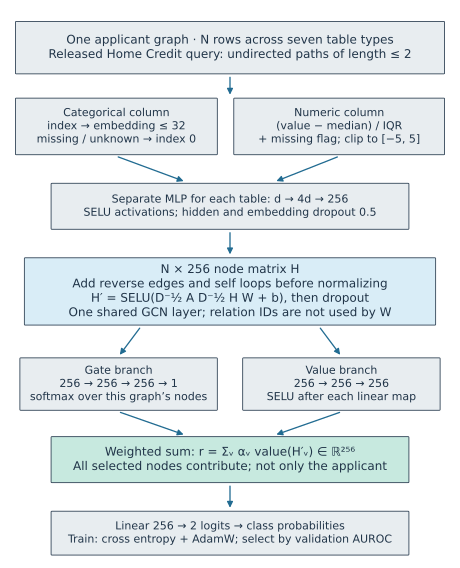
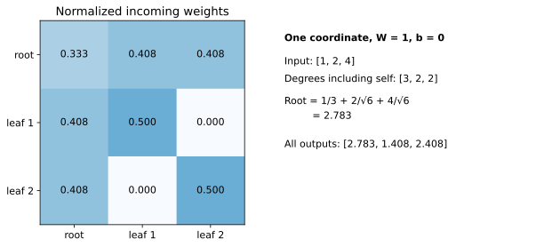

Year 3 · Quarter 4 · Lesson 118
Cvitkovic: relational graphs before modern RDL
The database graph idea before modern RDL
Your win: construct Cvitkovic’s target-specific graph, trace its prediction, and explain precisely what is shared with—and different from—the relational entity graph in Lesson 117.
Student notebook · Executed solution · Quick reference · Reproduction protocol
Study Sections 1–4 first. Then trace the model and implement the notebook tasks. The full-data experiment is a separate research exercise; executing the reference notebook does not establish that you can defend its choices.
See the idea · then trace the details
Relational GNNs: keep the database connections
Rows become nodes; foreign keys route information between tables.
1Map rows and keys
Table rows → nodes; foreign keys → edges
Construct the relational graph without replacing the full neighborhood by one manually aggregated flat row.
2Encode, then pass messages
Row attributes → states → typed messages
Encoders handle row attributes. Relational message passing uses the schema connections to propagate information.
3Read the task entity
Target-node state → prediction head
The task chooses which entities are scored. Available features, neighborhood extraction and evaluation splits remain explicit.
Pause and predict: Does turning rows into nodes automatically prevent temporal leakage?
No. The graph construction still needs feature-availability and task-time rules.
Answer: No. The graph construction still needs feature-availability and task-time rules.
1 · What existed before the RDL blueprint?¶
Lesson 117 began with a database and a prediction request. A relational entity graph, or REG, represents each row as a node and each foreign-key reference as a relationship. A foreign key is a value identifying a row in another table. A node feature describes a row, while a key identifies a relationship; the numerical distance between two customer IDs is generally meaningless.
Cvitkovic used the same basic row-to-node interpretation before the modern RDL blueprint. This lesson looks backward to understand the lineage. The useful question is not whether one paper invented every part of the other. It is which representations, computations, and evaluation contracts are actually the same.
Version matters. The curriculum calls this “Cvitkovic 2019.” A 2019 workshop version exists. Our implementation and numerical targets follow the expanded arXiv v1 paper, February 2020, and the released repository. Do not silently combine the older paper’s experimental claims with the later code.
Connection to the mission. To argue that learned relational models add value, you need to know which information a model receives and how it uses that information. The paper provides an early concrete alternative to manually aggregating related tables. It also supplies counter-evidence: relational GNNs do not win on every dataset. A defensible thesis must retain both observations.
In plain terms. Build a small graph for the person whose outcome you want to predict. Encode the rows in that graph. Let nearby rows exchange information. Summarize the resulting graph into a prediction for that person.
2 · Three objects that must not be confused¶
A schema graph has one node per table. It describes allowed relationships. A database graph has one node per actual row. It describes particular relationships. A target-specific graph is the selected portion used for one prediction.
Consider five tables: Customer, Order, OrderLine, Country, and a target column on Customer. A line refers to an order; an order refers to a customer; a customer refers to a country. We draw each stored edge in that foreign-key direction.
| Database object | Cvitkovic graph interpretation | Consequence |
|---|---|---|
| One customer row | One Customer node | Two customers are two nodes, even if their features match |
| One table | One node type | Different tables can need different encoders |
| Foreign-key column | An edge type | Two columns pointing to the same table may have distinct meanings |
| One foreign-key value | A directed edge | Follow identity, not row position or integer magnitude |
| Other columns | Node features | Encode values according to their type |
| Target column | Supervised label | Remove it from the input features |
This is the correspondence in the expanded paper’s Table 1. The term directed multigraph means that edges have directions and that more than one edge can connect the same pair of nodes. Keeping two reference types separate preserves their semantics. A particular GNN variant may subsequently ignore those types; graph representation and neural parameterization are separate decisions.
Predict before reading on. If two customers refer to the same country, must the second customer appear in the first customer’s prediction graph? A plain undirected neighborhood might include it. The paper’s extraction algorithm need not.
3 · RDBToGraph: two closures, in a fixed order¶
A closure repeats an expansion until no new nodes appear. It is not a fixed number of hops. In the paper’s Algorithm 1, edges point from the row holding the foreign key toward the referenced row.
First, collect incoming ancestors. Start with the target customer. Add every row that points to any selected row. Repeat. Orders pointing to the customer enter; lines pointing to those orders enter too.
Second, collect outgoing descendants. Starting from everything selected so far, follow outgoing references until no new nodes appear. The customer’s country enters. Other referenced products or dimensions would enter too.
Finally, retain induced edges. An induced graph includes every stored edge whose two endpoints are selected. Keep repeated edges; do not silently turn a multigraph into a set of pairs.


Worked example. Let node IDs be Customer A 0, Order A 1, Country 2, Customer B 3, Order B 4, and Line A 5. Stored edges are 1→0, 0→2, 3→2, 4→3, 5→1.
- Start:
{0}. - Incoming closure:
{0,1,5}. - Outgoing closure:
{0,1,2,5}. - Induced edges:
1→0,0→2,5→1.
Customer B is excluded. Discovering Country during the second phase does not restart the incoming phase. Alternating incoming and outgoing expansion would pull in Customer B and then Order B. That computes something else.
selected = {target}
for adjacency in [incoming, outgoing]:
queue = list(selected)
while queue:
node = queue.pop()
for neighbor in adjacency[node]:
if neighbor not in selected:
selected.add(neighbor)
queue.append(neighbor)
The queue is a list of nodes whose neighbors still need inspection. The selected set prevents revisiting cycles forever. With adjacency lists, each pass inspects each relevant node and edge at most a constant number of times. The resulting cost is linear in the graph size, O(V + E), where V counts nodes and E counts stored edges.
Task 1. Implement rdb_to_graph. Its CHECK includes a shared country, a cycle, parallel edges, and an isolated target. The notebook’s later graph construction calls your function, so passing a detached exercise is insufficient.
The actual Home Credit extractor is a separate object¶
The released Home Credit builder uses an undirected Neo4j path query of length zero through two around the application. This is a dataset-specific implementation choice. Do not present Algorithm 1 and that query as universally equivalent.
On our worked example, the two-hop query includes Customer B through Country. It also includes Line A through Order A. The abstract algorithm excludes Customer B. The interactive trace makes this distinction inspectable before we train anything.
The optional cutoff in this widget is a course intervention, not a reconstruction of the original paper’s temporal protocol. Holding the database and target fixed, it changes which rows are permitted to enter the graph. “Available at time 9” means the row’s information was usable by then; a historical event date alone does not prove this.
4 · Diff the computation, not just the terminology¶
Both Cvitkovic and Fey map rows to nodes and key references to graph relationships. Calling them fundamentally different graph representations would conceal the important continuity.
The contrast becomes concrete when we ask how a prediction is assembled. Fey et al. describe the broader RDL blueprint. Lesson 117 implements one specific RelBench model within it; its two-layer GraphSAGE architecture is not a universal definition of REG.
| Question | Selected Cvitkovic Home Credit release | Lesson 117’s selected RelBench implementation |
|---|---|---|
| What is a graph node? | A database row | A database row |
| What defines one supervised example? | One labeled application and its extracted graph | An entity, prediction timestamp, and future target |
| How is context obtained? | Preconstructed undirected two-hop graph | Query-time temporal neighbor sampling |
| How are tables encoded? | Separate scalar/category MLP initializers | Per-table encoders, plus relative-time encoding |
| What exchanges messages? | One shared GCN layer | Two typed GraphSAGE layers |
| What becomes the prediction input? | Attention-weighted summary of all selected nodes | The sampled seed entity representation |
| What is the evaluation split? | Five shuffled applicant folds | Chronological train/validation/test queries |
The readout difference matters. A readout converts a variable-size graph representation into a fixed-size vector. In Cvitkovic’s release, an old loan row can affect the prediction through graph-level pooling even when its information has not traveled all the way to the application node. In a seed-only readout, a row must influence that seed through the available message-passing paths. Therefore “one GCN layer” does not mean “the prediction uses only one-hop information around the target.” Extraction, message passing, and readout jointly determine information access.
Retrieval check. Cover the table and explain why neither “both use GNNs” nor “one uses a REG” is a sufficient comparison. A good answer names the shared row representation and at least three concrete computation or evaluation differences.
5 · Model architecture: trace the released Home Credit GCN¶
A hidden state is a learned numerical description of a node. In this release every table eventually produces 256 numbers per node, even though the raw columns differ. If a batched collection of graphs contains N total nodes, the hidden-state matrix has shape N × 256.


Diagram trace. Follow numeric and categorical branches into the shared GCN. Then trace the gate and value branches that pool all nodes within one applicant graph. On a narrow screen, scroll the figure sideways.
5.1 Encode values without turning IDs into measurements¶
Scalar columns. Subtract the released median, divide by the released interquartile range, append a missing-value flag, and clip to the interval −5 through 5. The interquartile range, or IQR, is the 75th percentile minus the 25th percentile. Missing values receive numerical value zero and flag one. The source also adds 1e-7 to observed normalized values; the port preserves it.
Worked example. With median 10 and IQR 2, an observed value 14 becomes approximately [2,0]. A missing value becomes [0,1]. An observed value 30 clips to [5,0]. The second coordinate lets the model distinguish a missing entry from a genuinely typical observation near the median.
Categorical columns. Map categories to integer indices, reserving index zero for missing or unknown values. An embedding is a trainable lookup table that converts an index to a vector. Its width is the smaller of 32 and the released cardinality including the missing category. Embedding coordinates are learned jointly with the predictor.
Table-specific MLP. Concatenate a row’s scalar encodings and categorical embeddings. If the concatenated width is d, its table’s multilayer perceptron maps d → 4d → 256. A linear layer learns a matrix and bias; a nonlinear activation between linear maps prevents the entire network collapsing into one linear map. Here the activation is SELU, the source’s scaled exponential linear unit. The initializer also applies SELU to its final output. Dropout randomly zeros coordinates during training, with probability 0.5, and is disabled for evaluation.
Scope check. The released metadata contains global category vocabularies and scaling statistics. Its metadata builder queries entire tables, rather than fitting statistics independently in each training fold. Preserving that choice reproduces the released preprocessing; it does not establish a leakage-free deployment protocol. The lesson’s modern port also changes the runtime. Both facts belong in the deviation ledger.
5.2 Add computational edges, then normalize messages¶
The stored graph has directed foreign-key edges. The release collator adds a reverse edge for each stored edge and a self edge for each node. A self edge permits a node’s previous state to participate in its own update. These edges are added after extraction; adding reverse edges before the two-phase closure would change the selected nodes.
For a receiver v, the normalized message sum is:
message[v] = Σ over edges u→v of h[u] / sqrt(degree[u] × degree[v]).
The degree counts incoming computational edges, including self edges and multiplicities. Because reverse edges are present, incoming and outgoing degrees agree. Then apply the learned matrix W, add bias b, apply SELU, and apply dropout. W has shape 256 × 256.


Worked example. Use one hidden coordinate, a root joined to two leaves, and a self edge at every node. Degrees are [3,2,2], and input values are [1,2,4]. The root receives 1/3 + 2/√6 + 4/√6 = 2.783 before the learned transform and activation. Taking a plain average would produce 7/3 = 2.333, a different operator.
Task 2. Implement normalized_sum. The model calls it inside forward. Use additive accumulation for repeated destinations; ordinary indexed assignment can overwrite earlier messages. The CHECK uses unequal degrees to distinguish symmetric normalization from a tempting neighbor mean.
Which parameters are shared? The selected vanilla GCN uses the same W on all nodes. Its initial row encoders are table-specific, but the GCN matrix does not depend on edge type. The paper’s ERGCN is a different variant with type-dependent transformations. Do not describe vanilla GCN as ERGCN because both consume a typed database.
5.3 Pool nodes with two learned branches¶
After message passing, the readout has two branches. The gate branch maps each node’s 256 coordinates through two 256-wide SELU layers and a scalar output. The value branch maps them through two 256-wide SELU layers. A softmax converts gate scores to positive weights summing to one within each individual graph.
For nodes belonging to graph g:
alpha[v] = exp(gate[v]) / Σᵤ∈g exp(gate[u])
representation[g] = Σᵥ∈g alpha[v] × value[v].
Worked example. If two gate scores are equal and the value vectors are [1,2] and [5,6], the pooled vector is [3,4]. Put a third node [9,10] in a different applicant’s graph: that applicant’s pooled vector is [9,10], and the first applicant’s vector must remain [3,4]. A batch-wide softmax violates this independence.
Task 3. Implement attention_pool. Its CHECK changes another graph’s scores and adds a large constant within a graph. Neither change should alter that graph’s intended softmax ratios. For numerical stability, subtract the maximum gate within each graph before exponentiation.
A final linear layer maps the 256-number summary to two logits, unnormalized scores for the two outcome classes. Softmax turns them into probabilities. Training uses cross entropy, which penalizes low probability assigned to the observed class, and AdamW, an optimizer that updates parameters using running gradient statistics. This release sets weight decay to zero and learning rate to 0.0001.
6 · What exactly does “reproduce Home Credit GCN” mean?¶
The named target is the expanded paper’s Table 4, Home Credit GCN: AUROC 0.780 ± 0.004. AUROC measures how often a randomly chosen positive is ranked above a randomly chosen negative, counting ties as half. The reported variation is across five cross-validation folds. These are different held-out applicants, not five fresh seeds on one fixed split.
The population. The released metadata lists 307,511 labeled applications. Kaggle’s additional 48,744 unlabeled applications do not supply the ground truth for Table 4. Each paper fold takes 20% of labeled applications as held-out test data; 15% of the remaining 80% becomes validation data. Approximately 68% of all labeled applications train the model, 12% select the checkpoint, and 20% evaluate it.
The identities. Sort application IDs, use five shuffled folds with split seed 14, then split train/validation with seed 14. Reset model seed 1234 for each fold. Our checker executes the released split functions and compares every train/validation/test ID with the port.
The training schedule. Use all training graphs, batch size 1024, hidden width 256, one GCN layer, dropout 0.5, AdamW, at most 300 epochs, and patience 50. An epoch is one traversal of the training examples. Patience permits a fixed number of validation checks without improvement before stopping. The released loop validates before each training epoch and keeps the first strictly best validation AUROC. Its final post-loop validation does not update that selected checkpoint. The port preserves the selection order.
The tuning history. The paper describes manual validation-based choices and an earlier learning-rate sweep. The released GCN recipe fixes the chosen hyperparameters and disables the rate finder. Running the released configuration does not reconstruct that unarchived search history.
The aggregation. Save each held-out applicant ID, label, and probability. Recompute AUROC independently from those predictions. Report the arithmetic mean and sample standard deviation of the five fold scores. Pooling all predictions into one global AUROC is a different summary and must not replace the fold mean silently.
Paper context, not new measurements. Table 4 reports Home Credit PoolMLP 0.769, single-table GBDT 0.754, and DFS + GBDT 0.777. PoolMLP accesses selected relational rows without passing graph messages; Deep Feature Synthesis, or DFS, constructs explicit relational aggregates for a tabular model. Comparing these arms separates access to other tables from the benefit of a particular learned aggregation. Our selected GCN replay alone would not rerun all these comparisons or establish general superiority.
Author evidence: source checks and real-data pilot¶
Full selected Home Credit experiment: NOT_RUN. The real-data timing pilot exceeded the approved aggregate cost projection; no paper AUROC has been measured here.
| Check or measurement | Result | Interpretation |
|---|---|---|
| Original Python-module forward discrepancy | 2.98e-08 | Controlled inputs, modern runtime and dense adapter |
| Original Python-module gradient discrepancy | 1.19e-07 | Numerical operator agreement, not full training |
| Algorithm 1 random target cases | 792 | Independent closure oracle |
| Real pilot graphs / nodes | 1,024 / 130,886 | One fixed batch from real Home Credit rows |
| Warm training-step median | 0.158 seconds | GPU compute after preparation |
| Batch preparation | 1.382 seconds | Dominant cost in the current port |
| Five-fold 300-epoch projection | USD 124.83 | Excludes full preparation, final tests and overhead |
| Approved aggregate ceiling | USD 10 | Includes all attempts and overhead |
The pilot has reconstructed CSV graphs, not verified Neo4j graph identity. It is a cost probe. Repeated updates to that batch establish neither validation quality nor a paper result. Caching could reduce the estimate, but no optimized timing has been measured. Pilot evidence · Data audit · Full preflight.
Evidence must answer the right question¶
| Evidence | What it can establish | What it cannot establish |
|---|---|---|
| Independent closure tests | Correct Algorithm 1 mechanics | Home Credit predictive quality |
| Original Python-module output/gradient agreement | Matching neural algebra on controlled inputs | Identical historical GPU kernels or full training |
| Real-data timing pilot | Approximate resource needs for the current port | Generalization performance or completed folds |
| Five full folds with identity/protocol audit | A selected released-protocol result | All models, all datasets, or original tuning history |
| Learner’s written defense | Their understanding of the computation | Performance of an unexecuted experiment |
The port’s source check runs pinned original row encoders, GraphConv, and gated pooling with an independent dense graph adapter on modern PyTorch. This is stronger than merely comparing two handwritten formulas, but it still does not execute the historical DGL binary. The check report states that boundary.
7 · Lab: make the information path falsifiable¶
Open the student notebook. It includes the complete port’s model and trainer, split into readable sections. The default experiment is a small synthetic computation exercise; it does not download restricted data or start a paid job. The author’s real-data pilot is separately recorded.
Predict. Before running the checks, list the nodes selected by Algorithm 1 and by the two-hop query. Predict how reversing the phase order changes the result. Predict whether appending another graph to a batch should alter the first graph’s evaluation output.
Implement. Complete the three functions. Immediate CHECK cells reject wrong extraction direction, plain-mean normalization, and batch-wide attention. The RUN cell uses your functions in a graph construction and a small end-to-end fit. Compare the loss before and after optimization; a finite loss by itself is not proof that learning happened.
Interpret. The synthetic task makes related-node features informative by construction. It tests wiring and gradient flow. It cannot tell us how useful Home Credit’s relationships are. Even perfect toy accuracy would leave the paper reproduction question unanswered.
Read the full-data path. The final notebook section shows how to prepare the author-format data and run all five folds with the full release settings. The runner refuses an incomplete population and records data hashes, runtime, predictions, and status. An aggregate time allowance stops the process rather than reporting partial folds as complete. Consult the protocol before using paid compute.
8 · Written defense and spaced return¶
Submit your three functions, l118-task-report.json, and a short defense covering these points:
- Trace both extraction phases on the six-node example. Explain why Customer B stays excluded.
- Explain why the released Home Credit query can differ from the general algorithm.
- Identify every place a table type matters in vanilla GCN and where edge types are ignored.
- Explain how a selected node beyond one hop from the target can influence a one-layer model’s pooled prediction.
- Defend the split, checkpoint, preprocessing, and cost boundaries of the attempted reproduction.
- Describe one experiment that would separate “access to related rows helps” from “graph message passing helps.”
Tomorrow: redraw the extraction passes without notes. In one week: reconstruct the two readout branches and explain their batch boundary. In one month: compare Cvitkovic, Lesson 117’s model, and a DFS baseline under a matched information budget.
Lesson 119’s planned synthesis can now ask a sharper question: when do relational rows supply useful information, and which computation best exploits it? A row-to-node mapping alone does not settle that empirical question.
Primary reading: expanded paper §3, Table 1, Algorithm 1, Table 4, and Appendix C. Read the released extractor and GCN recipe beside them. Ask the teaching agent about any unclear step, and bring your written defense for feedback. Learner status remains PENDING_WRITTEN_DEFENSE until you supply that evidence.
Carry this forward. Turn representation mechanisms and their limitations into a defensible synthesis. Continue to Lesson 119.